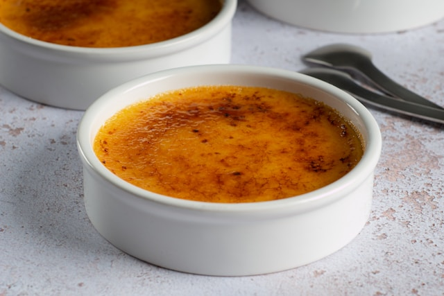

Home
Classic Crème Brûlée

Photo by
Max Griss
on
Unsplash
Description
A luxurious French dessert featuring a smooth, rich vanilla custard baked
until just set, then topped with a layer of granulated sugar that's
caramelized to a crisp, golden shell right before serving.
Ingredients
- 1 1/2 cups (360ml) heavy cream
-
1/2 vanilla bean, split lengthwise and scraped (or 1 teaspoon vanilla
extract)
- 4 large egg yolks
- 1/4 cup (50g) granulated sugar, plus 2 tablespoons for topping
- 1 pinch salt
Steps
-
In a medium saucepan, combine 1 1/2 cups heavy cream, the scraped seeds
from 1/2 a vanilla bean (and the pod itself if using), and 1 pinch salt.
Heat over medium-low heat until the cream just begins to simmer (small
bubbles form around the edges). Do not let it boil. Take the pan off the
heat. If using a vanilla bean, remove the pod and let the cream cool for
10 minutes to infuse the flavor. If using vanilla extract, you will add
it later.
-
In a medium bowl, whisk together 4 large egg yolks and 1/4 cup
granulated sugar until the mixture is pale yellow and smooth. It should
be slightly thicker.
-
Slowly pour the warm (but not hot) vanilla-infused cream into the egg
yolk mixture, whisking constantly. This is called tempering and helps
prevent the eggs from cooking too fast. If using vanilla extract, stir
in 1 teaspoon now. Strain the custard mixture through a fine-mesh sieve
into a clean bowl or a liquid measuring cup. This step removes any
cooked egg bits or vanilla bean particles, ensuring a silky-smooth
custard.
-
Preheat your oven to 325°F (160°C). Place two 4-6 ounce ramekins (small
oven-safe dishes) into a larger baking dish. Carefully pour the strained
custard mixture evenly into the ramekins. Fill the larger baking dish
with hot water until it reaches about halfway up the sides of the
ramekins. This is called a water bath (bain-marie) and helps the custard
cook gently and evenly.
-
Carefully transfer the baking dish with the ramekins to the oven. Bake
for 35-40 minutes, or until the edges of the custard are set but the
center still jiggles slightly when gently shaken. Take the baking dish
out of the oven and carefully remove the ramekins from the water bath.
Let them cool completely on a wire rack. Once cooled, cover them with
plastic wrap and chill in the refrigerator for at least 2 hours, or
until thoroughly cold and firm.
-
Just before serving, uncover the chilled custards. Sprinkle about 1
tablespoon of granulated sugar evenly over the top of each custard. Use
a kitchen torch to melt and caramelize the sugar until it turns a deep
amber color and forms a hard, crisp crust. Alternatively, you can place
them under a hot broiler (the top heating element in your oven) for 1-2
minutes, watching constantly, until the sugar is caramelized. Let the
caramelized sugar harden for 1-2 minutes before serving.
-
Serve the Crème Brûlée immediately after caramelizing the sugar. Enjoy
the satisfying crack of the top!
Home